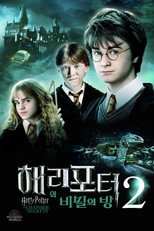

272주 기록 · 94개국
순서: 넷플릭스 한국 TOP10 에 든 작품을 먼저(최근에 든 순), 그다음은 TMDB 전 세계 인기도 순입니다 — 넷플릭스 외 서비스는 공식 순위를 공개하지 않습니다. 제공처는 JustWatch 자료(2026-11-27 확인)이며 가입 전 서비스에서 최종 확인하세요.

해리 포터와 비밀의 방 Harry Potter and the Chamber of Secrets영화 · 2002 · 모험 · SF/판타지 · 160분 · 웨이브에도제공처 ↗54해리 포터와 아즈카반의 죄수 Harry Potter and the Prisoner of Azkaban영화 · 2004 · 모험 · SF/판타지 · 136분 · 웨이브에도제공처 ↗55사이코패스시리즈 · 2012 · 애니메이션 · 범죄제공처 ↗56해리 포터와 불사조 기사단 Harry Potter and the Order of the Phoenix영화 · 2007 · 모험 · SF/판타지 · 137분 · 웨이브에도제공처 ↗57시타델 Citadel시리즈 · 2023 · 드라마 · 범죄제공처 ↗58반지의 제왕: 두 개의 탑 The Lord of the Rings: The Two Towers영화 · 2002 · 모험 · SF/판타지 · 177분 · 웨이브에도제공처 ↗59니글리 Neagley시리즈 · 2026 · 드라마 · 미스터리제공처 ↗60마스터플랜 Masterplan영화 · 2026 · 액션 · 스릴러 · 110분제공처 ↗